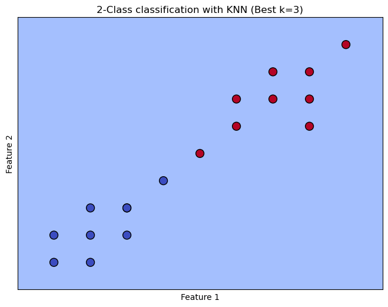

import numpy as np
from sklearn.model_selection import train_test_split, GridSearchCV
from sklearn.neighbors import KNeighborsClassifier
from sklearn.preprocessing import StandardScaler
from sklearn.pipeline import Pipeline
from sklearn.metrics import accuracy_score
# 增加数据量
X = np.array([[1, 2], [2, 3], [3, 2], [6, 6], [7, 7], [8, 6], [1, 1], [2, 1], [3, 3], [6, 7], [7, 8], [8, 7], [2, 2], [3, 3], [4, 4], [5, 5], [9, 9], [8, 8]])
y = np.array([0, 0, 0, 1, 1, 1, 0, 0, 0, 1, 1, 1, 0, 0, 0, 1, 1, 1])
# 将数据分为训练集和测试集
X_train, X_test, y_train, y_test = train_test_split(X, y, test_size=0.20, random_state=42)
# 创建一个管道，包含标准化和KNN分类器
pipeline = Pipeline([
('scaler', StandardScaler()),
('knn', KNeighborsClassifier())
])
# 设置要搜索的K值范围，考虑到数据量和交叉验证的折数
parameters = {'knn__n_neighbors': range(1, len(X_train) // 3)}
# 使用网格搜索，通过交叉验证找到最佳的K值，设置较小的cv值
grid_search = GridSearchCV(pipeline, parameters, cv=3)
# 训练模型
grid_search.fit(X_train, y_train)
# 在测试集上进行预测
y_pred = grid_search.predict(X_test)
# 计算并打印准确率
accuracy = accuracy_score(y_test, y_pred)
print(f"Model accuracy: {accuracy:.2f}")
# 显示最佳K值
print(f"Best number of neighbors: {grid_search.best_params_['knn__n_neighbors']}")
# 使用模型进行新数据点的预测
new_data = np.array([[2, 2]])
new_data_scaled = grid_search.best_estimator_.named_steps['scaler'].transform(new_data) # 使用相同的缩放
prediction = grid_search.best_estimator_.named_steps['knn'].predict(new_data_scaled)
print(f"The predicted class for new data point {new_data[0]} is {prediction[0]}")
---------------------------------------------------------------------------
ModuleNotFoundError Traceback (most recent call last)
Cell In[1], line 1
----> 1 import numpy as np
2 from sklearn.model_selection import train_test_split, GridSearchCV
3 from sklearn.neighbors import KNeighborsClassifier
ModuleNotFoundError: No module named 'numpy'
import matplotlib.pyplot as plt
# 创建网格来绘制决策边界
x_min, x_max = X[:, 0].min() - 1, X[:, 0].max() + 1
y_min, y_max = X[:, 1].min() - 1, X[:, 1].max() + 1
xx, yy = np.meshgrid(np.linspace(x_min, x_max, 100), np.linspace(y_min, y_max, 100))
# 预测整个网格上的结果
Z = grid_search.predict(grid_search.best_estimator_.named_steps['scaler'].transform(np.c_[xx.ravel(), yy.ravel()]))
Z = Z.reshape(xx.shape)
# 绘图显示
plt.figure(figsize=(8, 6))
plt.contourf(xx, yy, Z, alpha=0.8, cmap=plt.cm.coolwarm)
plt.scatter(X[:, 0], X[:, 1], c=y, cmap=plt.cm.coolwarm, s=100, edgecolors='k')
plt.title("2-Class classification with KNN (Best k={})".format(grid_search.best_params_['knn__n_neighbors']))
plt.xlabel('Feature 1')
plt.ylabel('Feature 2')
plt.xlim(xx.min(), xx.max())
plt.ylim(yy.min(), yy.max())
plt.xticks(())
plt.yticks(())
plt.show()
